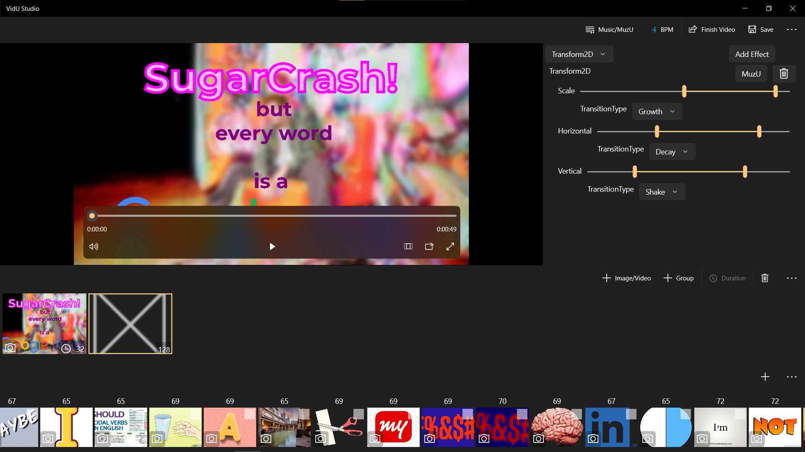

1. MuzU
MuzU is a creative platform focused on synchronizing visuals with the rhythm of music. It started as an experimental project and evolved into a suite of tools for generating stunning music-driven visuals.
2. MuzU Studio
MuzU Studio is an application that automates the process of making music visualizations. It enables users to generate rhythm-based video effects with minimal effort.
3. Space Shooter
Space Shooter is a side project under MuzU that integrates music-reactive gameplay mechanics, where game elements respond dynamically to audio input.
4. VidU Studio
VidU Studio is another project that builds upon MuzU's core concept. It focuses on automatically generating music videos using AI-enhanced editing techniques.
5. Google Images
Google Images integration in MuzU was an experiment in fetching and manipulating image assets dynamically to create visually engaging experiences.